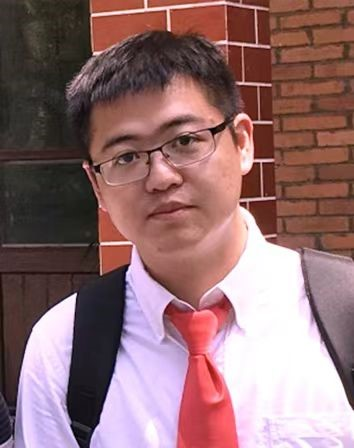

|  | Lecturer |
Currently Dr. SHI is a teacher at Guangdong University of Technology (GDUT). Before that, he graduated from Sun Yat-Sen University with a PhD degree, supervised by Prof. [Liang Lin (林倞教授)]. He was a visiting student in the University of Sydney and Microsoft Research Asia, worked with Prof. [Wanli Ouyang (欧阳万里教授)] and Dr. [Jingdong Wang (王井东研究员)], respectively.
His current research interests are mainly focus on data mining, computer vision and machina learning. He serves as a Reviewer for a number of journals and conferences, such as IJCV, IEEE T-PAMI, T-NNLS, T-IP, T-MM, T-CSVT, CVPR, ICCV, ECCV, AAAI, etc.
AI Generated Content (AIGC): Diffusion Model for Fantasy Generation.
Multimodality Sensing: Cross-sensor Cooperative Sensing, Vision-Thermal Recognition, etc.
Computer Vision and Pattern Recognition: Low-light Enhancement, Video Super-Resolution, etc.
NiteDR: Nighttime Image De-Raining with Cross-View Sensor Cooperative Learning for Dynamic Driving Scenes
Cidan Shi* , Lihuang Fang, Han Wu, Xiaoyu Xian, Yukai Shi, Liang Lin
Submitted to IEEE Transactions on Multimedia (T-MM), 2024. [PDF] [Code]
NegVSR: Augmenting Negatives for Generalized Noise Modeling in Real-world Video Super-Resolution
Yexing Song* , Meilin Wang, Zhijing Yang, Xiaoyu Xian, Yukai Shi
Proc. of AAAI Conference on Artificial Intelligence (AAAI), 2024. [PDF] [Code] [Demo]
Structural Information Guided Multimodal Pre-training for Vehicle-centric Perception
Xiao Wang, Wentao Wu, Chenglong Li, Zhicheng Zhao, Zhe Chen, Yukai Shi, Jin Tang
Proc. of AAAI Conference on Artificial Intelligence (AAAI), 2024. [PDF] [Project Page]
MirrorDiffusion: Stabilizing Diffusion Process in Zero-shot Image Translation by Prompts Redescription and Beyond
Yupei Lin* , Xiaoyu Xian, Yukai Shi, Liang Lin
IEEE Signal Processing Letters (SPL), 2024. [PDF] [Project Page] [Code]
CROSE: Low-light Enhancement by CROss-SEnsor Interaction for Nighttime Driving Scenes
Xiaoyu Xian, Qi Zhou, Jinghui Qin, Xiaojun Yang, Yin Tian, Yukai Shi, Daxin Tian
Expert Systems with Applications (ESWA), 2024. [PDF]
OccluMix: Towards De-Occlusion Virtual Try-on by Semantically-Guided Mixup
Zhijing Yang, Junyang Chen* , Yukai Shi, Hao Li, Tianshui Chen, Liang Lin
IEEE Transactions on Multimedia (T-MM), 2023. [PDF] [Code]
Reference-free Low-light Image Enhancement by Associating Hierarchical Wavelet Representations
Xiaojun Yang, Junhong Gong, Lianpei Wu, Zhijing Yang, Yukai Shi, Feiping Nie
Expert Systems with Applications (ESWA), 2023. [PDF]
Scale-Aware Squeeze-and-Excitation for Lightweight Object Detection
Zhihua Xu, Xiaobin Hong, Tianshui Chen, Zhijing Yang, Yukai Shi
IEEE Robotics and Automation Letters (RA-L), 2022. [PDF] [Code]
DnSwin: Toward Real-World Denoising via Continuous Wavelet Sliding-Transformer
Hao Li* , Zhijing Yang, Xiaobin Hong, Ziying Zhao, Junyang Chen, Yukai Shi, Jinshan Pan
Knowledge-Based Systems (KBS), 2022. [PDF] [Code]
Criteria Comparative Learning for Real-scene Image Super-Resolution
Yukai Shi, Hao Li, Sen Zhang, Zhijing Yang, Xiao Wang
IEEE Transactions on Circuits and Systems for Video Technology (T-CSVT), 2022. [PDF][Code][RealSR-Zero]
Exploring Negatives in Contrastive Learning for Unpaired Image-to-Image Translation
Yupei Lin* , Sen Zhang, Tianshui Chen, Yongyi Lu, Guangping Li, Yukai Shi
ACM International Conference on Multimedia (ACM MM), 2022. [PDF][Code]
Real-World Image Super-Resolution by Exclusionary Dual-Learning
Hao Li* , Jinghui Qin, Zhijing Yang, Pengxu Wei, Jinshan Pan, Liang Lin, Yukai Shi
IEEE Transactions on Multimedia (T-MM), 2022. [PDF][Code]
DFAEN: Double-Order Knowledge Fusion and Attentional Encoding Network for Texture Recognition
Zhijing Yang, Shujian Lai, Xiaobin Hong, Yukai Shi, Yongqiang Cheng, Chunmei Qing
Expert Systems with Applications (ESWA), 2022. [PDF]
Unsupervised Multi-view Clustering by Squeezing Hybrid Knowledge from Cross View and Each View
Junpeng Tan*, Yukai Shi, Zhijing Yang, Caizhen Wen, Liang Lin
IEEE Transactions on Multimedia (T-MM), 2021. [PDF]
GTAE: Graph Transformer–Based Auto-Encoders for Linguistic-Constrained Text Style Transfer
Yukai Shi, Sen Zhang, Chenxing Zhou, Xiaodan Liang, Xiaojun Yang, Liang Lin
ACM Transactions on Intelligent Systems and Technology (ACM T-IST), 2021. [PDF][Code][Benchmark]
DDet: Dual-path Dynamic Enhancement Network for Real-world Image Super-resolution
Yukai Shi, Haoyu Zhong, Zhijing Yang, Xiaojun Yang, Liang Lin
IEEE Signal Processing Letters (SPL), 2020. [PDF] [Code]
Face Hallucination by Attentive Sequence Optimization with Reinforcement Learning
Yukai Shi, Guanbin Li, Qingxing Cao, Keze Wang, Liang Lin
IEEE Transactions on Pattern Analysis and Machine Intelligence (T-PAMI), 2020. [PDF][Code]
Difficulty-aware Image Super Resolution via Deep Adaptive Dual-Network
Jinghui Qin*, Ziwei Xie, Yukai Shi, Wushao Wen
IEEE International Conference on Multimedia and Expo (ICME), Oral, 2019. [PDF][Code]
Structure-preserving Image Super-resolution via Contextualized Multitask Learning
Yukai Shi, Keze Wang, Chongyu Chen, Li Xu, Liang Lin
IEEE Transactions on Multimedia (T-MM), 2017. [PDF][Code]
Attention-aware Face Hallucination via Deep Reinforcement Learning
Qingxing Cao, Liang Lin, Yukai Shi, Xiaodan Liang, Guanbin Li
IEEE Conference on Computer Vision and Pattern Recognition (CVPR), 2017. [PDF][Code]
Local- and Holistic-structure Preserving Image Super Resolution via Deep Joint Component Learning
Yukai Shi, Keze Wang, Li Xu, Liang Lin
IEEE Conference on Multimedia and Expo (ICME), Oral, 2016. [PDF][Code]
2020-2021, Challenger, Honor of Kings
2016-2017, Excellent Graduate Scholarship, Sun Yat-sen University